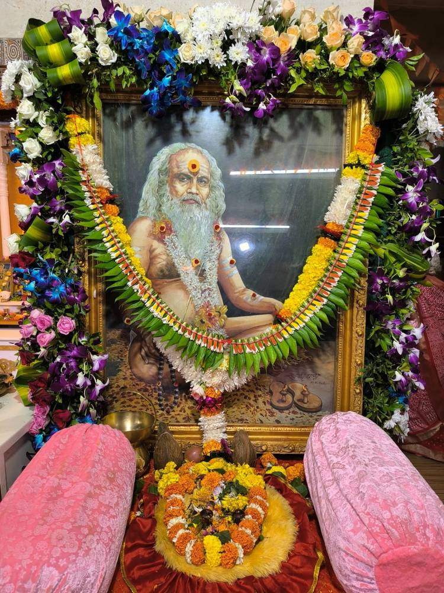
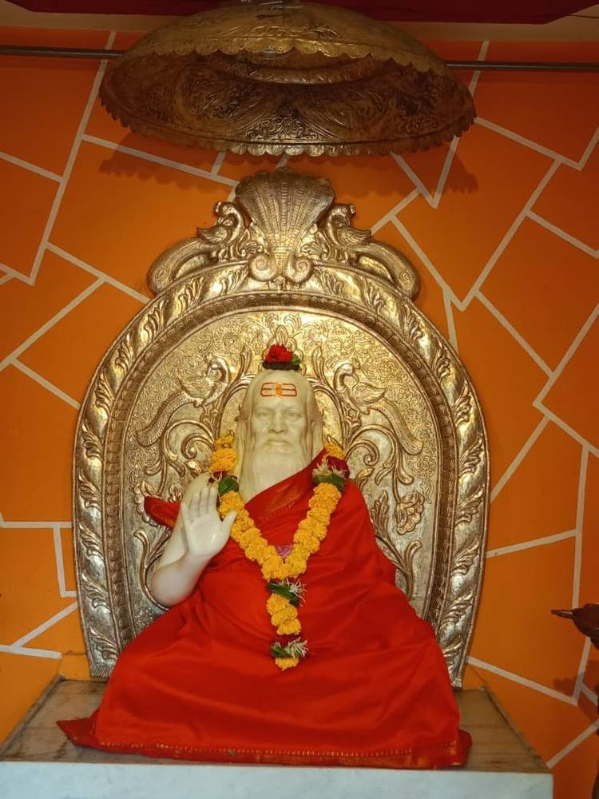
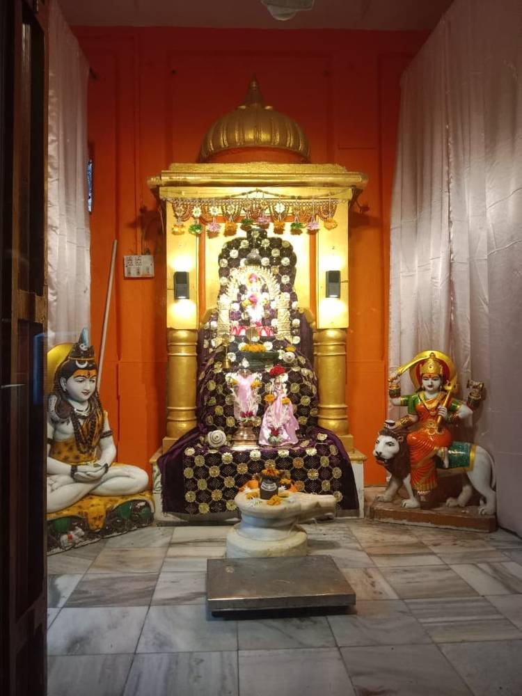

जन्म व बालपण
समर्थ रामदास स्वामींनी प्रतिकूल परिस्थितीत शिवाजी महाराजांकरवी स्वराज्य स्थापनेचे भव्य कार्य करवून घेतले, अगदी तशाच बिकट परिस्थितीत भारतमातेच्या मुक्तीचे कार्य जनतेच्या मदतीने सिद्धीला नेणारे संत म्हणजे प. पू. पाचलेगावकर महाराज. त्यांच्या कार्यासाठी सतत चालणाऱ्या भ्रमंतीमुळे त्यांना 'संचारेश्वर' हे समर्पक नाव मिळाले.
परभणी जिल्ह्यातील जिंतूर तालुक्यातील पाचलेगाव या छोट्या खेड्यात राजारामपंत व कृष्णाबाई पांडे (कुलकर्णी) हे सुशील दांपत्य राहत होते. संतती नसल्याचे दुःख उराशी बाळगून असताना राजारामपंतांना एका दिव्य स्वप्नदृष्टान्ताद्वारे आणि लोणीचे प. पू. सखाराम महाराज यांच्या आशीर्वादाने भावी अवताराची चाहूल मिळाली. यथावकाश, नरक चतुर्दशीच्या पवित्र दिवशी — ८ नोव्हेंबर १९१२ रोजी — या पुण्यवान दांपत्याच्या घरी बाळाचा जन्म झाला. नरश्रेष्ठ म्हणून जन्माला आलेल्या या बाळाचे नाव 'नारसिंह' ठेवण्यात आले.
बाळाच्या बाललीला इतर सामान्य बालकांपेक्षा अगदी निराळ्या होत्या. पाळण्यात असतानाच तो सापाशी सहज खेळत असे — एकदा तर पाळण्यात सर्प पाहून आई भयचकित झाली, पण तो साप स्वतःहूनच निघून गेला. रांगू लागलेल्या या दिव्य बालकाला पाहून श्री माधवाश्रम स्वामींनी राजारामपंतांना सांगितले, "हे बाळ नसून प्रत्यक्ष ईश्वर आपल्या घरी अवतरलेला आहे." पुढे प. पू. श्री वासुदेवानंद सरस्वती स्वामी (टेंबे स्वामी) पाचलेगावी आले असता त्यांनीही या बाळाला साक्षात परब्रह्माचा अवतार म्हणून गौरवले.
गुरुकृपा आणि 'संचारेश्वर' नामकरण
प. पू. पाचलेगावकर महाराजांची गुरुपरंपरा श्री वासुदेवानंद सरस्वती (टेंबे स्वामी) — श्री नारायण दत्तानंद सरस्वती — श्री माधवाश्रम स्वामी अशी होती. या परंपरेतील श्री माधवाश्रम स्वामींनीच या दिव्य बालकाचे नामकरण 'संचारेश्वर' असे केले. बाळाच्या बाललीलांमधून त्याचे सामर्थ्य वेळोवेळी प्रकट होत राहिले — शेजाऱ्यांच्या घरातील गुरे-वासरे सोडणे, गावातील खोड्या करणे, आणि तरीही प्रत्येक प्रसंगात एक अनामिक करुणा व शहाणपण दिसून येई.
वयाच्या सातव्या वर्षी घडलेला एक प्रसंग विशेष स्मरणीय आहे — जंगलात वाघ आल्याची अफवा ऐकून आई कृष्णाबाईंनी बाळाला जंगलात जाण्यास मज्जाव केला, पण दुसऱ्याच दिवशी बाळ स्वतःचे उपरणे वाघाच्या गळ्यात घालून त्याला शेळीसारखे शांतपणे घरी घेऊन आला आणि देवघरात नेऊन त्याची पूजा केली! या घटनेने अवघे पाचलेगाव थक्क झाले आणि छोट्या बाबांच्या असामान्यत्वाची कीर्ती चहूकडे पसरू लागली. वयाच्या आठव्या वर्षी माधवाश्रम स्वामींच्या साक्षीने एका डोंगरावरील गुहेतून बालमित्र नऱ्ह्याने 'संचारेश्वर' असे लिहिलेल्या शिळेवरून स्मरणी, भस्म व एक वही आणून दिली — आणि तेव्हापासून बाबांच्या पूर्वस्मृती जागृत होऊन त्यांना आपल्या अवतारकार्याची पूर्ण जाणीव झाली.

यज्ञ, श्रमदान आणि समाजजागृतीचा प्रारंभ
वयाच्या अवघ्या तेराव्या वर्षी बाबांनी पाचलेगावी पहिला यज्ञ घडवून आणला — पाच दिवस चाललेल्या या यज्ञासाठी सर्व जाती-धर्मांचे लाखो लोक एकत्र आले होते. यानंतर १९२६ साली कळमनुरी येथे झालेल्या संहिता स्वाहाकारासाठी संत तुकडोजी महाराज, संत गाडगे महाराज, संत दासगणू महाराज आणि करवीर पीठाचे शंकराचार्य डॉ. कुर्तकोटी यांसारख्या पुण्यात्म्यांची उपस्थिती लाभली. शंकराचार्यांनी स्वतःच्या अंगावरील शाल बाबांच्या अंगावर घालून त्यांना 'धर्मभास्कर' ही पदवी बहाल केली.
पुढे महाराजांनी परभणी, हिंगोली, सावड रिसोड, बाळापूर, असवाडा अशा असंख्य ठिकाणी यज्ञ व श्रमदान उपक्रम आयोजित केले — यांतून रस्ते तयार करणे, विहिरी खणणे, गरीब शेतकऱ्यांची शेते नांगरून देणे अशी कामे स्वखर्चाने केली जात. "श्रमाची कोणालाही लाज वाटता कामा नये, राम आणि काम हे दोन्ही एकच आहे," अशी शिकवण देत "मानवसेवा हीच माधवसेवा" हा संदेश त्यांनी सर्वदूर पोहोचवला.
"श्रमाची कोणालाही लाज वाटता कामा नये. प्रत्येकाने परमेश्वराची पूजा आणि अनुष्ठान म्हणून श्रमदान करावे." — प. पू. पाचलेगावकर महाराज
स्वातंत्र्यलढ्यातील सहभाग
महाराजांनी आपल्या प्रभावी वाणीने समाजात राष्ट्रप्रेमाची व अन्यायाविरुद्धच्या प्रतिकाराची ज्योत पेटवली. यासाठी त्यांनी 'मुक्तेश्वर दल' या संघटनेची स्थापना केली आणि मुंबई ते हैदराबाद संस्थानाची हद्द व नगर ते कुरुंदवाड या संपूर्ण प्रदेशात दीडशेहून अधिक शाखा उभारल्या. या कार्यामुळे अस्वस्थ झालेल्या निजामाने १९२८ साली महाराजांना तब्बल वीस वर्षांसाठी हैदराबाद संस्थानातून हद्दपार केले — मराठवाडा सोडून जाणे ही गोष्ट महाराजांसाठी अतिशय क्लेशकारक होती, तरीही त्यांनी आपले कार्य मराठवाड्याच्या हद्दीबाहेरूनही अखंड सुरू ठेवले.
१९३० साली सत्याग्रह चळवळीत भाग घेतल्याबद्दल महाराजांना येरवडा तुरुंगात टाकण्यात आले, जिथे महात्मा गांधी, रावसाहेब पटवर्धन यांसारखे अनेक नेते त्यांच्यासोबत होते. पुढे १९४१ साली स्वातंत्र्यवीर सावरकरांच्या आशीर्वादाने ग्वाल्हेर संस्थानात 'हिंदू राष्ट्र सेना' या सशस्त्र संघटनेची स्थापना झाली, जिचे अध्यक्षपद महाराजांकडे सोपवण्यात आले. १९४० ते १९४६ या काळात अथक परिश्रम घेऊन महाराजांनी उत्तरेत आग्ऱ्यापासून दक्षिणेत कुरुंदवाडपर्यंत बारा हजारांहून अधिक सैनिकांची ही सेना उभी केली.

१५ ऑगस्ट १९४७ रोजी भारताला स्वातंत्र्य मिळाले, तेव्हा महाराजांच्या वर्षानुवर्षांच्या अथक जनजागृतीचा व संघटनकार्याचा सिंहाचा वाटा त्या यशामध्ये होता. मात्र त्यांनी या श्रेयाची अपेक्षा कधीच केली नाही — त्यांनी हे यश सर्व नेत्यांचे, संस्थांचे व संपूर्ण भारतीय जनतेचे असल्याचे सांगितले. देशाच्या फाळणीचे मात्र त्यांना अतीव दुःख झाले, आणि त्यानंतरही संकटात सापडलेल्या लोकांना मदत करण्यासाठी त्यांनी अथक परिश्रम घेतले.
स्वातंत्र्यानंतरचे समाजकार्य
स्वातंत्र्यानंतरही महाराजांचे समाजसेवेचे व्रत तसूभरही कमी झाले नाही. १९५० साली ब्रह्मपुत्रेच्या पुरात होरपळलेल्या आसामवासीयांसाठी त्यांनी घरोघरी फिरून कपडे, धान्य व पैसे गोळा केले. "गावात एकी झाल्याशिवाय मी अन्न घेणार नाही" अशी प्रतिज्ञा करत त्यांनी असंख्य गावांतील तंटे, गुंडगिरी व गरिबांचा छळ मिटवला. बळीप्रथेच्या नावाखाली होणारी पशुहत्या त्यांनी थांबवली, हजारो लोकांना व्यसनमुक्त केले आणि अस्पृश्यता निवारणाच्या कार्याला सनातनी लोकांच्या विरोधाचीही तमा न बाळगता चालना दिली. स्त्रीला समाजात मानाचे स्थान मिळावे यासाठीही ते आग्रही होते — "संसाराच्या रथाची स्त्री आणि पुरुष ही दोन चाके आहेत, दोघांचेही महत्त्व सारखेच आहे," असे ते नेहमी सांगत.
महाराजांच्या सर्पाविषयीच्या ज्ञानाची व्याप्ती विलक्षण होती. खामगावातील श्री. विष्णुपंत पत्की यांना नाग चावून ते बेशुद्ध झाले असता, डॉक्टरांनी त्यांना मृत घोषित केल्यानंतरही महाराजांनी त्यांचे प्राण वाचवले — असे शेकडो सर्पदंशाचे रुग्ण महाराजांच्या उपचाराने बरे झाले. १९५८ साली दिल्ली भेटीदरम्यान त्यांनी पंडित जवाहरलाल नेहरूंच्या गळ्यात एक जिवंत नाग घातला होता, तेव्हा शांतपणे ते म्हणाले, "घाबरण्याचे कारण नाही. या जहरी जनावरापेक्षा माणूस अधिक जहरी आहे."
"माझी आणि राष्ट्राची उन्नती एकच आहे — दलितांची सेवा हीच माझी सेवा आहे, या भावनेतून मी समाजकार्य, राष्ट्रकार्य करण्याचे व्रत घेतले. यालाच मी समष्टी धर्म असे नाव दिले." — प. पू. पाचलेगावकर महाराज
महासमाधी आणि वारसा
आयुष्यभर जनकल्याणासाठी झिजलेल्या या महात्म्याने अखेर श्रावण शुद्ध एकादशीच्या पवित्र दिवशी, शनिवारी सकाळी, आपल्या नश्वर देहाचा त्याग करून अनंताचा प्रवास सुरू केला. त्यांचा देह खामगावच्या मुक्तेश्वर आश्रमात आणण्यात आला, जिथे लाखो भाविकांनी अंत्यदर्शन घेतले. भगव्या वस्त्रात लपेटलेला त्यांचा देह त्यांनी आयुष्यभर आराधना केलेल्या अग्निदेवतेच्या स्वाधीन करण्यात आला आणि रक्षेचे कलश भक्तांनी भारतातील सप्त नद्या व महातीर्थांमध्ये विसर्जित केले.
देश आणि धर्मासाठी अवघे आयुष्य व्यतीत करणाऱ्या या असामान्य कर्मयोग्याने वक्तृत्व, संघटन-कौशल्य, निःस्वार्थ सेवा आणि निर्भयतेचा जो आदर्श घालून दिला, तो आजही लाखो अनुयायांना प्रेरणा देत आहे. त्यांनी स्थापन केलेला मुक्तेश्वर आश्रम आज खामगाव, पाचलेगाव, नांदेड, नागपूर, लातूर, दत्तवाडी (नैकोटा) यांसह अनेक ठिकाणी भाविकांच्या सेवेत कार्यरत आहे. चिन्मय पादुका संचारेश्वर ट्रस्ट, मुलुंड ही याच परंपरेतील एक शाखा असून, महाराजांनी दाखवलेल्या भक्ती, सेवा आणि राष्ट्रप्रेमाच्या मार्गावर आजही कार्यरत आहे.
|| श्री गुरुदेव दत्त ||
महाराजांच्या कार्यात सहभागी व्हा — आश्रमाच्या सेवाकार्यांना आपला हातभार लावा.
देणगी विभागाकडे जा →